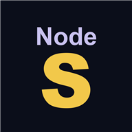

nodeS
Pi life with Yongk
PC 프로그램을 휴대폰 어플과 연결!
PC에서 운영 중인 파이 노드의 상태를 휴대폰으로 확인하고,
문제가 생기면 알림을 받아 볼 수 있습니다.
설치 방법 영상
사용하시는 인터넷 브라우저를 골라 영상을 보며 따라 해 주세요.
활용 방법 영상
설치를 마치셨다면, 휴대폰으로 노드를 관리하는 방법을 확인해 보세요.
YouTube에서 보기
알아두시면 좋은 것
- PC 프로그램이 켜져 있는 동안만 상태가 전달됩니다.
- 프로그램은 스스로 최신 버전으로 업데이트되므로 따로 다시 다운로드하지 않으셔도 됩니다.
- 컴퓨터가 7일간 연결되지 않으면 연동이 해제되어 다시 연결해 주셔야 합니다.
- 실행에 필요한 구성 요소(.NET)는 설치 파일이 자동으로 설치합니다.